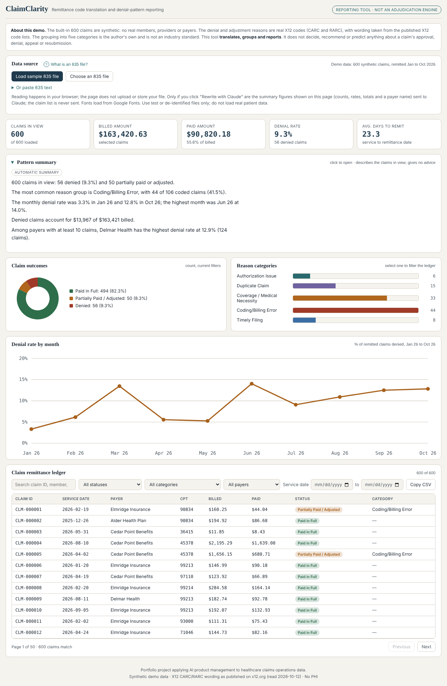

Case study · Healthcare claims · Product management
ClaimClarity
Turning a health plan's remittance file into a plain-English picture of why claims were paid, adjusted or denied.
The problem
When a health plan processes a claim, it sends the provider an electronic remittance file called an 835. It is full of numeric codes. A business reader sees CAS*CO*197*2000 and cannot tell that it means "authorization missing". Billing and denial teams end up looking codes up one by one, and patterns such as "authorization denials are rising" stay hidden in thousands of lines.
What I built
ClaimClarity reads an 835 in the browser (nothing is uploaded), or uses 600 synthetic claims, and turns it into a picture a non-technical person can read in a minute:
- Plain-English reason beside the official X12 wording for each code
- Claims grouped into five reason categories, plus an "Other / Unmapped" bucket so nothing is dropped
- Claim count, billed and paid amounts, denial rate and a month-by-month trend
- A searchable ledger with filters for status, category, payer and service date, and CSV export
- A written summary of the pattern, with an optional rewrite by Claude that is checked for invented numbers and advice wording

My role and how it was built
I owned the product: the problem, the scope, the requirements (BRD and FRD), the rules and the review. Claude wrote the code under my direction. I tested the result, commissioned an independent audit and decided what to fix.
Product decisions I stand behind
- Reporting and translation only. The tool never decides, recommends or predicts anything about approval, denial or appeal. My experience is in payer data and reporting, not in deciding claims, so the tool stays inside that line.
- Only verified codes are translated. I checked the wording of all 14 translated codes against the official X12 code lists. Two of them (CARC 15 and 125) are now retired, so they are kept for older files and labelled "Retired code" with the stop date shown on x12.org. A wrong translation is worse than none, so everything else shows as "Other / Unmapped".
- Synthetic data only. No patient data, no real payers.
- No 837 support, on purpose. An 837 is a claim before any outcome exists, so there is nothing to translate. Pairing 837s with their 835s is a natural next step.
How I checked it
- An independent audit raised 14 points. I reproduced each against the code: six were real and fixed (for example, two remittances in one file used to share one payer and date), and the rest were wrong, already known or low priority.
- Metrics such as denial rate, billed and paid totals were recomputed separately from the raw data and match.
- After showing it to colleagues in healthcare, three suggestions shipped: a "What is an 835 file?" tip, a collapsible summary and a service-date filter.
Honest limits
- The five categories and the rule that ignores routine adjustments (CO-45, PR-1, PR-2, PR-3) are my own choices, not an industry standard, and have had no domain review.
- Only the first reason code of each claim is used for grouping.
- Not yet done: testing with a real de-identified 835, a screen reader test and a contrast audit.
- The value is reasoned for a hypothetical claims team and has not been validated with real users.
What I would do next
- Test with two or three real de-identified 835 files.
- Show every service line of a claim, not just the first.
- Pair 837s with their 835s to show billed versus returned.
- Interview two or three claims analysts and replace the reasoned targets with measured results.